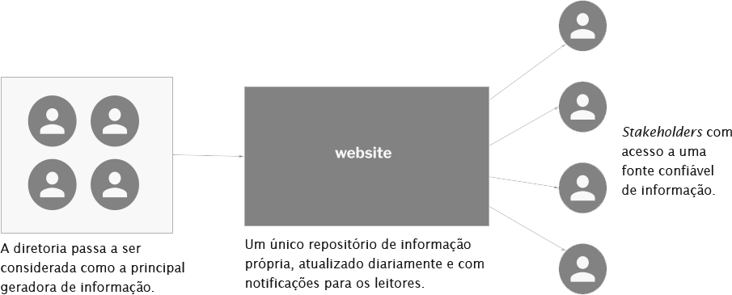
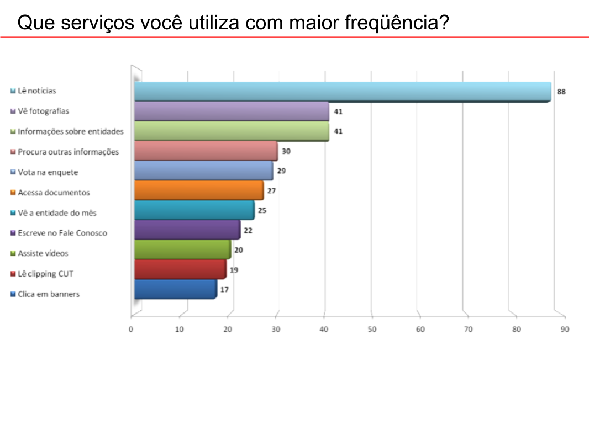
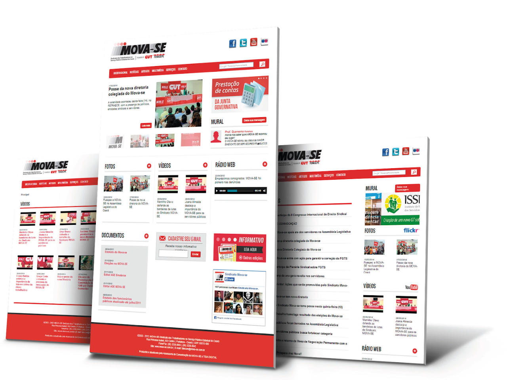

Acertando o tom para comunicar com eficiência
Como ajudei a criar um produto digital para que líderes sociais melhorassem a comunicação com seus stakeholders, em 2011.
Contexto
Em 2011, enquanto estava na Teia Digital, fomos abordados por uma Organização Sem Fins Lucrativos com sede em Fortaleza, destinada a defender interesses da classe trabalhadora.
Eles precisavam encontrar uma maneira de comunicar sua agenda aos seus stakeholders e também serem considerados a principal fonte de informação em seu setor, para os meios de comunicação de massa.
A estratégia de comunicação de uma NPO é a chave para o seu sucesso. Como seu principal objetivo é ajudar as pessoas a mudar de vida para melhor, é vital encontrar o público certo e falar de maneira a ser compreendido. Acertar o tom, é um desafio.
Desafio
Liderar a equipe de design para desenvolver um produto digital capaz de atender às necessidades de comunicação da instituição, levando em consideração a diversidade de experiências, cultura e demografia de seus membros.
Processo

O que fiz
O primeiro passo foi criar a equipe certa. Montei um time formado por Designers (User Interface & User Experience), jornalistas (UX Writing), profissionais de marketing (Customer Experience), desenvolvedores de software (Back e Front end) e audiovisual (captura e edição de som, foto e vídeo) .

Minhas principais responsabilidades
- Planejar e conduzir pesquisas de UX
- Criar wireframes, prototipagem
- Organizar e conduzir sessões de crítica de design
- Criar e manter HTML/CSS
- Comunicar os resultados ao cliente
Declaração do problema
A organização de classe precisava de soluções digitais para ajudá-los a comunicar suas agendas aos seus stakeholders (membros, imprensa e outras ONGs).
Objetivos
- Criar um site institucional para ajudar a equipe de comunicação a manter as informações sempre atualizadas.
- Treiná-los para manter o site em dia, usando um CMS.
- Desenvolver e executar um boletim informativo digital e construir a lista de e-mails do zero.
Abordagem
Crie uma única fonte de informações que ajude a diretoria da entidade e seus membros a se manterem atualizados.

Processo de design
No desenvolvimento do produto, executou-se um processo de design com quatro passos básicos.

1 Pesquisa

2 Prototipação

3 Avaliação

4 Treinamento

1 Pesquisa
O produto começou a ser pensado a partir de informações repassadas pela entidade, o que nos fez perceber a lacuna existente entre conhecer as reais necessidades dos leitores e demais membros. Criamos uma pesquisa on-line e divulgamos por e-mail e nas redes sociais existentes.
Como foi a pesquisa
- Usamos perguntas fechadas com duas perguntas abertas para colher opiniões;
- 105 entrevistados;
- Descobrimos que as pessoas usavam a Internet para ler notícias, ver fotos de eventos e saber o que outras instituições estavam fazendo. A maioria (88 pessoas) não tinha acesso a e-mails da entidade, mas gostaria muito de receber informações, toda semana.
- Com esses dados, decidimos desenvolver um site baseado em notícias, com uma cobertura fotográfica de seus eventos e construir um banco de dados para uma newsletter semanal (boletim informativo).
Ao final desta fase, trabalhamos também na Arquitetura da Informação do site.
2 Prototipação
- Fase de ideação, usando caneta e papel.
- Escolha da ideia para construir um protótipo de baixa fidelidade (Fireworks).
- Obtenção da aprovação da estrutura.
- Criação de um protótipo de baixa fidelidade para testar com alguns usuários.
3 Avaliação
- Aplicação de um teste básico para avaliar o entendimento do conceito e funções, com um pequeno número de usuários.
- Construção dos protótipos de alta fidelidade.
- Novo teste e ajustes.
- Lançamento do site.

4 Treinamento
- Preparar a equipe e a diretoria da entidade para trabalhar na nova plataforma de comunicação.
- Gerar relatórios para analisar as métricas de sucesso do site.

Impacto gerado
- Os relatórios do Analytics mostraram um aumento significativo no número de visitantes.
- Os assinantes da lista de e-mails para a newsletter aumentaram 200% em 3 meses.
- Outras entidades vieram até nós pedindo o mesmo tipo de trabalho.